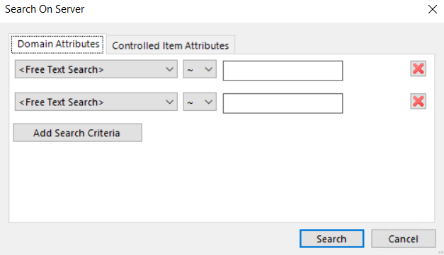
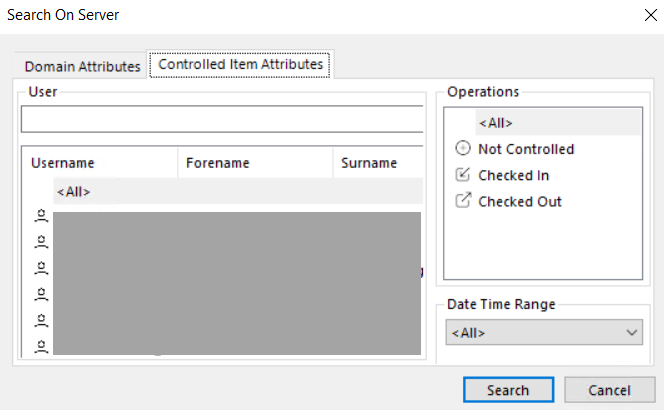

Shared search
The search option allows you to search information about a particular project in a simple way.
Search criteria
- ProjectName
- ProjectDescription
- ProjectAuthorName
- ProjectVersion
- NodeName
- NodeDescription
- NodeType
- NodeSystemVersion
- NodeLocationName
- FolderOrFileName
Search project/user details
- Go to Server View.
- From the Server menu option, select Shared Search.
- The Search On Server dialog box displays.
- Under Domain Attributes, from the drop-down menu, select Project name for example.
- In the empty field, enter the name of the project that you want to search.
- Click Search.
- The project displays in the output pane below.
- Right-click and select Navigate to the item.
- The project is automatically synchronized and takes you to the location of the project under the project tree.

- Use Add Search Criteria to add more ways to search an item.
- In the Controlled Item Attributes tab, enter the user details in the User field to search information about the user and click Search.
- You can see the search results filtered in the field below.
- In the Operations section, select the Not Controlled, Checked In or Checked Out projects, by clicking on any of the given options and then click Search.
- The results display in the output pane as message logs.
